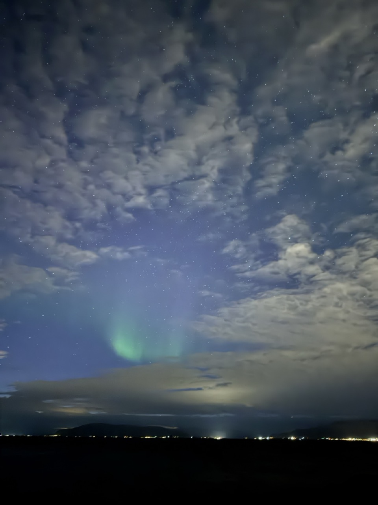

Fellow STAR Lab colleagues at AAS 2025Grindelwald, SwitzerlandGrand Canyon, AZ

Northern lights from Reykjavík, IcelandGullfoss, IcelandJoshua Tree National ParkHiking at Mt. RainierPotter Marsh south of Anchorage, AKAt Madison Falls in Olympic National ParkVisiting the high-contrast imaging testbed facility at JPLHiking in Griffith Park with my IPAC cohortObservatory at Mt. WilsonEuropa Clipper from the high bay at JPLWith my partner in Lauterbrunnen, SwitzerlandThe Colosseum, Rome/figcaption>
BuranoSandia Mountains in New MexicoView from Artist's Bluff in the White Mountains, NH